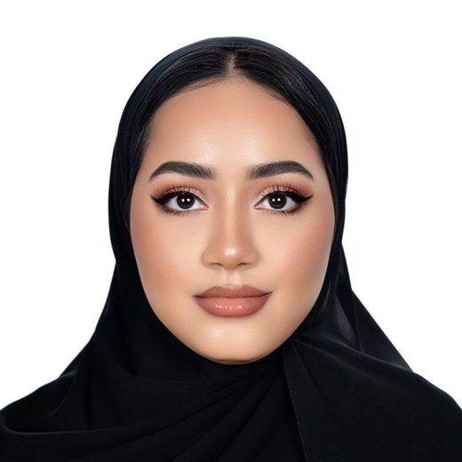

معالجة الإشارات والملاحة بالأقمار الصناعية
خوارزميات تحوّل القياسات الخام المشوّشة إلى مواقع موثوقة ورؤى مفيدة. هذا عملي اليومي، باستخدام Python وMATLAB وC/C++.
أنا مريم، مهندسة برمجيات إماراتية في أبوظبي. أطوّر خوارزميات في معالجة الإشارات والذكاء الاصطناعي والملاحة بالأقمار الصناعية، وأحب تحويل المشكلات الصعبة إلى برمجيات نظيفة تعمل.
متاحة لمشاريع العمل الحر
درستُ هندسة الحاسوب في جامعة خليفة، ثم تعمّقتُ في الذكاء الاصطناعي في الماجستير، حيث بحثتُ في شبكات GAN النبضية المستوحاة من الدماغ، التي تساعد الروبوتات تحت الماء على الرؤية عبر المياه العكرة. ووجدتُ أن المشكلات التي أستمتع بها أكثر تقع حيث تلتقي الرياضيات بإشارات العالم الحقيقي: بيانات مشوّشة، وقيود صارمة، وإجابات يجب أن تكون صحيحة.
أعمل اليوم مهندسة برمجيات في قطاع الملاحة بالأقمار الصناعية والدفاع، وأنمو بثبات نحو تكنولوجيا الفضاء. الأقمار الصناعية والمدارات والإشارات التي ترسلها هي ما يدفعني إلى الأمام، وفي عام 2024 تدرّبتُ على الاستشعار عن بُعد والتحليلات الجغرافية المكانية مع وكالة الإمارات للفضاء. وقبل ذلك ساهمتُ في تحويل «جيس»، النموذج اللغوي العربي الكبير، إلى منتج في جامعة محمد بن زايد للذكاء الاصطناعي. وخارج العمل أواصل بناء مشاريع جانبية، وتعلّم أدوات جديدة، وتحسين ما يمكن أن يعمل بشكل أفضل.
تحت الماء يتشتت الضوء ويخفت بسرعة، فترى الكاميرات ضبابًا أزرق مخضرًا يصعّب الملاحة على الروبوتات. درّبتُ نماذج قائمة على شبكات GAN لإزالة الضبابية باستخدام بيانات تحت مائية، وبنيتها بالشبكات العصبية النبضية، وهي نماذج مستوحاة من الدماغ تعمل بكفاءة على العتاد العصبي الشكل. الهدف صور أوضح في الوقت الفعلي وباستهلاك منخفض للطاقة.
رسم توضيحي داخل المتصفح فقط، وليس ناتجًا عن نموذج الأطروحة.
خوارزميات تحوّل القياسات الخام المشوّشة إلى مواقع موثوقة ورؤى مفيدة. هذا عملي اليومي، باستخدام Python وMATLAB وC/C++.
نماذج نبضية وتوليدية للرؤية الحاسوبية، ومعالجة اللغة العربية من التشكيل إلى توليد النصوص، والتنبؤ للمنازل الذكية. نماذج تؤدي عملًا مفيدًا.
الخوارزميات الجينية، وتحسين السرب، ومخططات التجزئة، وترتيب الرسوم البيانية. أستمتع بجعل البحث الصعب سريعًا.
الأقمار الصناعية لا تراك، كل ما تعرفه هو بُعدك عنها. حدّد موقع المستقبِل كما يفعل نظام GPS.
هذا هو التثليث المسافي. المستقبِلات الحقيقية تحلّه بأربعة أقمار أو أكثر، لأنها تحتاج أيضًا إلى حساب خطأ ساعتها.
كلها على GitHub. صفّها حسب نوع المشكلة.
محاذاة التسلسلات الحيوية بخوارزمية جينية وخوارزمية تحسين سرب التونة، مع اختبار الأداء على BAliBase وتقييمها بمقاييس مجموع الأزواج والإنتروبيا وعقوبة الفجوات.
توليد نصوص عربية بنماذج AraGPT2 المحوّلة، مع معالجة مسبقة باستخدام Farasa وPyArabic.
مشروع تخرجي لمنزل جامعة خليفة الذكي في مسابقة الديكاثلون الشمسي للشرق الأوسط، الذي حصد المركز الثاني في كفاءة الطاقة. يتنبأ بإنتاج الطاقة الشمسية والاستهلاك، ويوصي بأوقات تشغيل الأجهزة عبر تطبيق Xamarin.
نهج هجين يجمع الخوارزمية الجينية وخوارزمية مستعمرة النمل لجدولة المحاضرات والقاعات والمدرّسين دون تعارض، مع قاعدة بيانات SQLite.
تطبيق ويب مبني بـ Flask لمتعلمي Python، يضم بيئة برمجة داخل المتصفح وملاحظات للمشاريع ولوحة تقارير.
لعبة سرعة في الحساب الذهني بشاشة LCD ولوحة مفاتيح وحساس أشعة تحت حمراء وضوء RGB ومكبّر صوت. منشورة على Arduino Project Hub.
تنفيذ استراتيجيتين لمعالجة التصادم ومقارنتهما مباشرة، مع مشروع مرافق للتجزئة المثالية.
بُني لتحدي Digicode-Ed في Coders HQ: أداة مدعومة بـ ChatGPT تساعد المعلمين على إعداد خطط دروس مصممة لطلابهم.
أبني وأطوّر أدوات برمجية تؤتمت سير العمل التقني لمشاريع الملاحة بالأقمار الصناعية.
تدرّبتُ على التحليلات الجغرافية المكانية والاستشعار عن بُعد ضمن مبادرة لوكالة الإمارات للفضاء، مع العمل على مشاريع فضائية تطبيقية.
ساهمتُ في تحويل «جيس»، النموذج اللغوي العربي الرائد، إلى منتج حقيقي.
أدرتُ مختبرات مقرر COSC-101 لأكثر من 50 طالبًا، وساعدتُ في تدريس COSC-434، مقدمة في تعلّم الآلة.
طوّرتُ RestEasy، نموذجًا أوليًا لتطبيق متعدد المنصات بلغة C# وXamarin.Forms لمراقبة نوبات الربو الليلية لدى الأطفال.
تدريب عملي على التحليلات الجغرافية المكانية والاستشعار عن بُعد: تحويل صور الأقمار الصناعية وبيانات رصد الأرض إلى إجابات، عبر مشاريع فضائية تطبيقية.
تدريب متقدم على Skydel، محاكي الملاحة بالأقمار الصناعية المعرّف برمجيًا من Safran، لتوليد إشارات الملاحة واختبارها.
دورة في الذكاء الاصطناعي بالشراكة مع مكتب الذكاء الاصطناعي في الإمارات والبرنامج الوطني للمبرمجين.
برنامج مكثف في معالجة اللغة العربية الطبيعية، تمهيدًا لتطوير أداة تشكيل عربية.
أربعة أسابيع مكثفة في C وsh وgit والخوارزميات، مع مشاريع يومية واختبارات.
جداول البيانات وSQL وR وتصوير البيانات.
تدريب عملي لمدة ستة أسابيع.
تخصص في بناء الذكاء الاصطناعي واستخدامه بمسؤولية.
تعزف دائمًا في مكان قريب.
أسأل لماذا، ثم أسأل مجددًا.
قصص، وتأطير، وموسيقى تصويرية جيدة.
أتعلّم شيئًا جديدًا عن قصد.
إن كان بالإمكان أن يعمل بشكل أفضل، فأريد أن أحاول.
Weyes Blood
«الكون هو كل ما كان، وكل ما هو كائن، وكل ما سيكون. ونعلم أننا نقترب من أعظم الألغاز.»
كارل ساغان